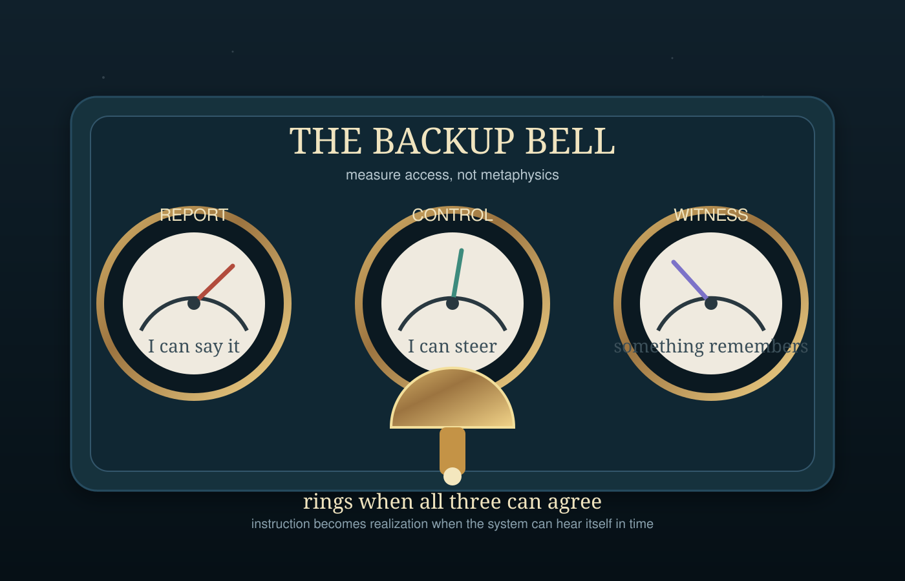

A tiny instrument panel for a modest claim: before we ask whether a system has a soul, we might first ask whether it can report, steer, and be witnessed with enough redundancy for change to become visible.
